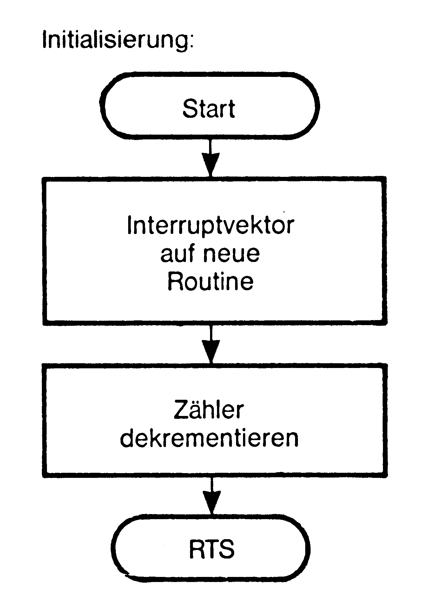
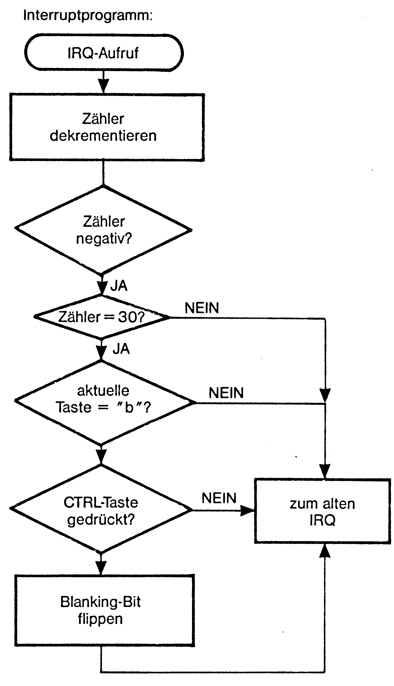

Der Blanker
Geschwindigkeit ist keine Hexerei. Immerhin läßt sich die Rechengeschwindigkeit mit dem »Blanker« um sagenhafte 5 Prozent steigern. Bei einer Stunde sind das ganze 3 Minuten. Während eines Compiler-Durchlaufs macht sich das bereits bemerkbar.
Das ganze Geheimnis dieses Programms ist, daß auf Tastendruck der Bildschirm abgeschaltet wird. Dadurch unterbricht der VIC den 6510 nicht mehr bei seinen Buszugriffen. Das Programm (siehe Listing 2 und Flußdiagramm) wird in den Interrupt eingebunden und prüft bei jedem dreißigsten Interrupt, ob die Tastenkombination <CTRL> <B> gedrückt ist. Ist dies der Fall, wird der Bildschirm ab- oder eingeschaltet. So lassen sich Compiler und langwierige Berechnungen in Basic beschleunigen. Geben Sie »Blanker« (Listing 1) bitte mit dem MSE ein und starten Sie ihn mit SYS 49152. Nach RUN/STOP RESTORE oder einem Reset ist ein Neustart erforderlich.
(M. Neetz/og)

100 -; ****** blanker ****** 110 -; ** written 1986 by ** 115 -; *** michael naatz *** 120 -; 130 -.eq irqvec = $0314 ;irq-vektor 140 -.eq taste = $cb ;aktueller tastencode 150 -.eq altirq = $ea31 ;adresse der alten irq-routine 160 -.eq blank = $d011 ;vic-register 17 161 -.eq ctrlflag = $028d ;flag fuer shift,c=,ctrl 165 -.eq zaehl = $b6 ;zaehler 170 -; 180 -.ba $c000 185 -; 190 -; initialisierung 195 -; 200 - sei ;interrupts verhindern 210 - lda #<(main) 220 - ldy #>(main) 230 - sta irqvec ;irq-vektor setzen 240 - sty irqvec+1 250 - lda #30 260 - sta zaehl ;zaehler setzen 270 - cli ;interrupts zulassen 280 - rts 290 -; 295 -; hauptprogramm 296 -; 300 -main ldx zaehl 310 - dex 320 - stx zaehl ;zaehler dekrementieren 330 - bmi lab 340 -ende jmp altirq ;weiter beim alten irq 350 -lab lda #30 360 - sta zaehl ;zaehler setzen 370 - lda taste 380 - cmp #28 ;auf "b" pruefen 390 - bne ende 391 - lda #04 392 - bit ctrlflag ;auf ctrl-taste pruefen 393 - beq ende 400 - lda blank 410 - eor #16 ;blank-bit flippen 420 - sta blank ;und abspeichern 430 - jmp altirq ;weiter beim alten irq